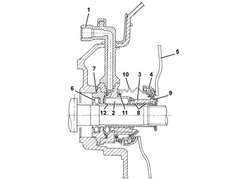
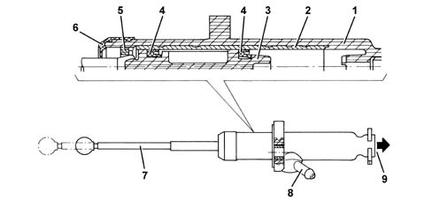

Operation
- Path
- Descriptions > 18 CLUTCH > 1820 clutch release controls > 1820B CLUTCH RELEASE HYDRAULIC OPERATION > Operation
- Kind
- system description
- Applies to
- all engines; all production periods
- Interactive page
- https://sloeber94.github.io/elrnDB-lThss/en/#/144410
Applies to: all engines; all production periods
"CSC" hydraulic actuator cylinder

- 6 - Oil seal
- 7 - O - Ring seal
- 8 - Anti-wear pads
- 9 - Oil seal
- 10 - Rubber seal
- 11 - Spring
- 12 - Guide pipe
- 1 - Oil inlet pipe
- 2 - Expansion chamber
- 3 - Piston
- 4 - Thrust bearing
- 5 - Pressure plate springs
The clutch release takes place through the action of the clutch pump which sends oil, under pressure, via the pipe (1), into the expansion chamber (2). The pressure of the oil causes the movement of the piston (3) which slides in the guide pipe (12) through the teflon anti-wear pads (8). The piston is in one piece with the thrust bearing (4) which presses on the pressure plate springs (5) thereby releasing the clutch. As the pressure of the oil ceases, the actuator returns to the rest position through the effect of the pressure plate springs (5).
Any oil leaks that may occur inside the clutch bellhousing are sealed by a gasket (9), on the clutch side whilst there is an oil seal (6) and an O - Ring (7) on the gearbox side.
There is a rubber seal (10), kept in position by a spring (11), as protection against the entry of any foreign bodies.
CLUTCH RELEASE PUMP

- 1 - Casing
- 2 - Steel cylinder
- 3 - Piston
- 4 - Gasket
- 5 - Piston stop fork
- 6 - Protective seal
- 7 - Operating shaft
- 8 - Oil inlet
- 9 - Oil supply to CSC actuator
The clutch release pump has been designed with a plastic piston and casing to reduce the weight and with the operating shaft secured to the piston. There is a steel cylinder, inside the casing in the area where the piston seals slide, to prevent the wear and distortions which result from the pressure.